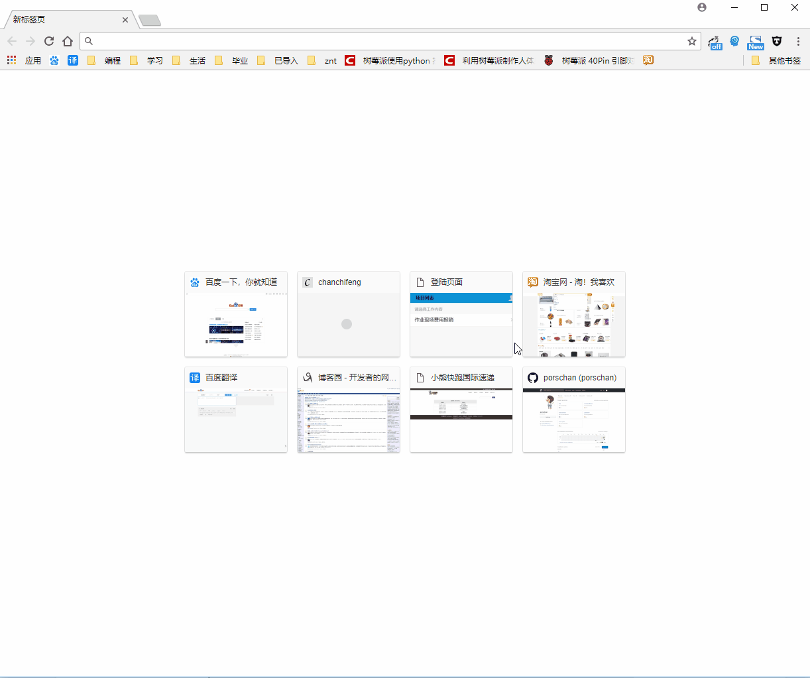
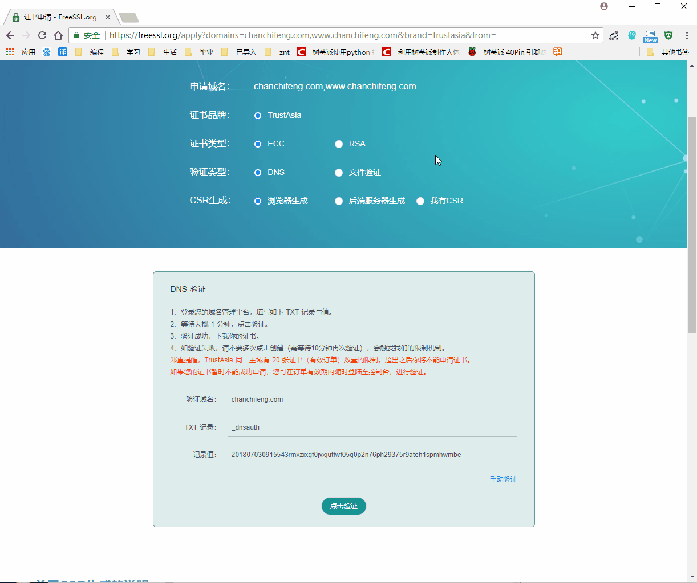
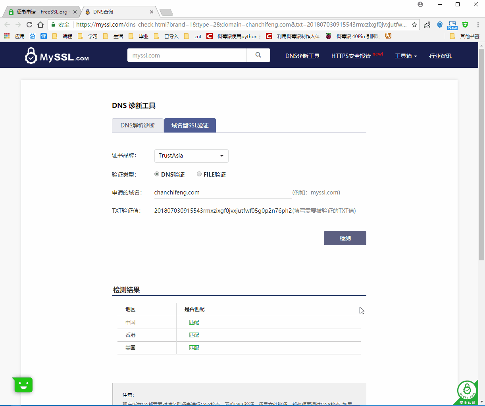
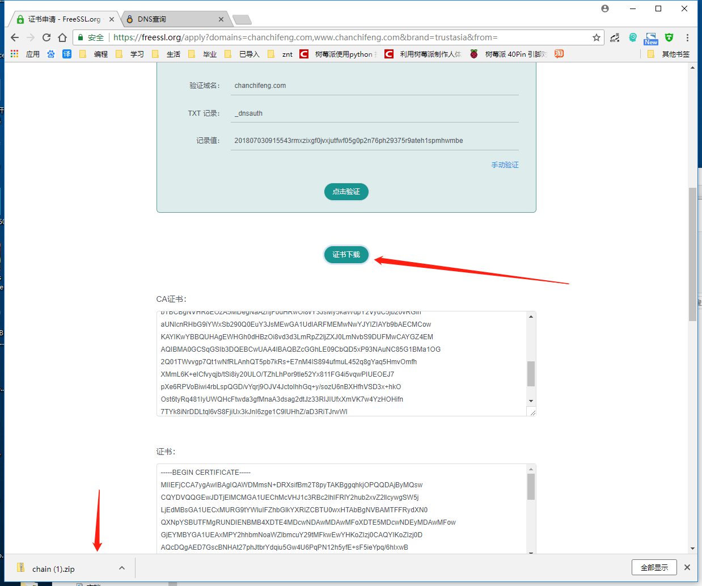
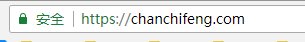

http和https的原理和区别这里就不一一细谈，在搭建网站使用https的时候总结了以下。
这里使用的FreeSSL.org的免费证书
1.进入FreeSSL.org的官网，以我的chanchifeng.com为例子，操作如下

到此，我们能能拿到DNS 验证，接下来就要到我们的服务器管理后台做如下配置，以阿里云为例子：
2.添加安全组规则的入方向，配置如下：
1 |
|
3.添加解析：进入云解析DNS -> 解析设置 -> 添加记录，配置如下：
1 |
|
上面的主机记录和记录值为上面的DNS 验证的信息，配置完成如图：

4.手动验证，操作如下：

5.验证并下载证书，操作如下：


6.登录服务器，操作如下：
1 |
|
完成，网站就能启动https了，如下：

存在的问题：
1.阿里云有SSL证书，这里没有用到。
2.不能显示二级域名如https://www.chanchifeng.com
PS:后续继续解决！